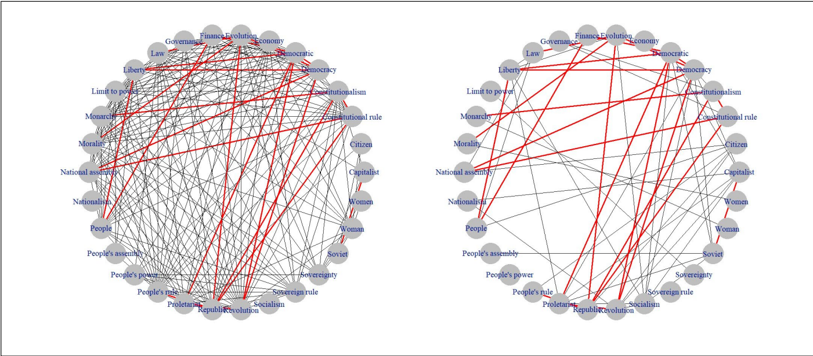
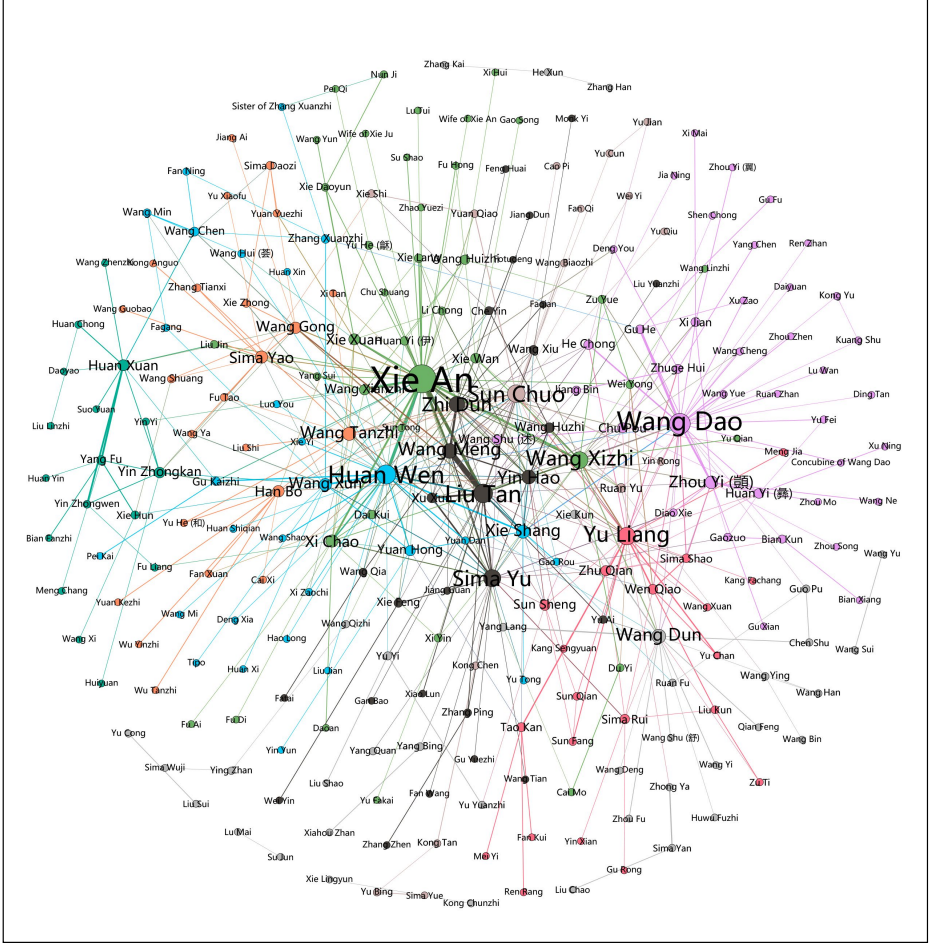

研究對象之間相互依存；要理解發生了什麼，關係本身是必要的。The things you study are interdependent: the connections matter, and are required to understand what is going on.
after Weingart, “Demystifying Networks”, Part I
歷史資料裡到處是關係：Historical sources are full of relations:
書信往來correspondence
師生、同年teacher–student, same exam year
姻親、親屬marriage and kinship
共同出現named together in a text
城市與路線places linked by routes
文本互引texts citing or copying texts
網絡把這些關係變成可以計數、比較的東西。A network turns relations into something we can count and compare.
節點Nodes
節點（node；也叫 vertex, actor, agent）：我們所研究的「東西」。通常是同一類型的許多個例。The “stuff” we study: many individuals of one type (also called vertices, actors, agents).
歷史研究中的節點類型：Node types in historical research:
人物 people地點 places機構 institutions事件 events文本 texts作品 works
節點有屬性（attributes）：Nodes carry attributes:
節點 node
生年 born
卒年 died
籍貫 native place
官職 office
王安石
1021
1086
撫州臨川
宰相
司馬光
1019
1086
陝州夏縣
宰相
蘇軾
1037
1101
眉州眉山
翰林學士
屬性讓我們之後能問：相連的人是否也共享籍貫、官職？Attributes let us ask later: do connected people also share a native place or an office?
邊Edges
邊（edge；也叫 link, tie, relation）：節點之間的關係。關係的類型要事先定義。Relations between nodes (links, ties). The type of relation must be defined up front.
無向：對稱的關係Undirected: symmetric (kinship, alliance)
有向：有方向Directed: a letter from A to B, a citation
加權：強度或次數Weighted: 12 letters, not 1
多種類型：同一對人可有多種關係Multiple types: both colleagues and in-laws
每一個選擇都是歷史判斷：「同年」算不算一條邊？一封信算一條邊嗎？Every choice is a historical judgement: is “same exam year” an edge? Is one letter a tie?
一類節點，還是兩類？One kind of node, or two?
單模（1-mode）：只有一種節點。雙模（2-mode, bipartite）：兩種節點，邊只連接不同類型。1-mode: one type of node. 2-mode (bipartite): two types, and edges only link across types.
雙模 2-mode：人物 ↔ 文獻 people ↔ documents
⇒ 投影 projection
單模 1-mode：同現於一份文獻 co-named in a document
多數中心性演算法為單模設計。Most centrality algorithms were designed for one-mode networks.
雙模網絡丟進 Gephi 算「中心性」，程式會跑，數字卻不是你以為的意思。Run centrality on a bipartite network in Gephi: it works, but the numbers do not mean what they usually mean (Weingart).
背景：北宋的新法與舊法之爭Background for our example: reform and opposition in Northern Song
1069
神宗任用王安石，推行新法（青苗法、免役法等）。Emperor Shenzong backs Wang Anshi’s New Policies.
1070s
司馬光、韓琦等反對；司馬光退居洛陽，編《資治通鑑》。Sima Guang, Han Qi and others oppose; Sima Guang retires to Luoyang to write the Zizhi tongjian.
1085–86
神宗去世，司馬光主政，廢除多數新法：元祐更化。Shenzong dies; Sima Guang returns and reverses most reforms (the Yuanyou period).
1094–
哲宗親政，起用章惇等新法派，元祐舊臣遭貶。Zhezong takes over; Zhang Dun and reformers return, Yuanyou officials are banished.
1104
徽宗朝頒布元祐黨籍碑：309 人的名單 —— 正是 De Weerdt 等人的研究對象。Huizong’s reign issues the Yuanyou faction list of 309 names, the subject of De Weerdt et al.
「新法」「舊法」是後人與當時人貼的標籤；蘇軾、歐陽修等人很難歸類。“New” and “old” are labels; people like Su Shi and Ouyang Xiu are hard to classify.
一張小網絡A small network to work with
示意網絡（簡化，非研究資料） toy network, simplified for illustration
例：誰是關鍵中間人？誰屬於緊密小圈子？Who is the key intermediary? Who sits in a tight circle?
整體看大圖，局部看行動者。接下來用同一張小網絡逐項計算。Global: the big picture. Local: the actors. Next we compute each measure on one small network.
整體測量Global measures: describing the whole network
示意網絡 toy network
·
規模：節點數 · 邊數Size: nodes · edges
密度 = 實際的邊 ÷ 可能的邊（）Density: actual edges ÷ possible edges
平均路徑長度：任兩人之間平均隔幾步Average path length: steps between two nodes
直徑：最遠的兩人（橘色路徑）Diameter: the longest shortest path (orange)
網絡越大，密度通常越低：不同規模不能直接比。Larger networks are sparser: sizes must be accounted for.
誰重要？三種中心性Who matters? Three centralities
度中心性Degree
直接連接的數量How many direct connections
例：通信對象最多的學者The scholar with the most correspondents
誰最活躍 who is busiest
中介中心性Betweenness
有多常位於其他人的最短路徑上How often a node lies on shortest paths between others
例：連接兩個派系的人The one connecting two factions
誰是橋樑 who is the bridge
接近中心性Closeness
到所有人平均有多近How near a node is to everyone else
例：位於貿易路線中心的城市A city at the centre of trade routes
誰最快到達全網 who reaches all fastest
進階：特徵向量中心性與 PageRank —— 連到「重要的人」比連到「很多人」更算數。Advanced: eigenvector centrality and PageRank weigh the importance of the neighbours too (links to important nodes count for more).
同一張圖，三個答案One network, three answers
節點大小 ＝ 中心性；橘色為前三名 size = centrality, orange = top three
度：誰的朋友最多？Degree: who has the most ties?
中介：誰是橋樑？Betweenness: who bridges the camps?
接近：誰離所有人最近？Closeness: who is nearest to everyone?
三個排名不一樣。選哪個指標，就是選哪種「重要」。The rankings differ. Choosing a measure means choosing a kind of importance.
聚類係數：朋友的朋友也互相認識嗎？Clustering: are my neighbours also neighbours?
藍＝所選節點；橘＝鄰居與鄰居之間的邊 blue = chosen node, orange = its neighbours and their mutual edges
看一個節點的鄰居：他們之間有多少條邊？Look at one node’s neighbours: how many of them know each other?
高 C ＝ 緊密小團體；低 C ＝ 鄰居互不相識，此人可能是中介者。High C: a tight clique. Low C: neighbours do not know each other, so this node may be a broker.
進階中心性Advanced centrality measures
不只算「有幾條邊」，還算「連到誰」。Not only how many ties, but who the ties lead to.
特徵向量中心性Eigenvector centrality
鄰居越重要，自己越重要。Important if connected to other well-connected nodes.
Katz 中心性Katz centrality
計入直接與間接連結，距離越遠權重越小（衰減）。Direct and indirect ties, with a decay for distant nodes.
PageRankPageRank
兼顧連結的數量與品質；原用於網頁排名。Weighs the number and quality of links; designed for ranking web pages.
調和中心性Harmonic centrality
類似接近中心性，但適用於不連通的網絡。Like closeness, but works on disconnected networks.
歷史網絡常常不連通（史料有缺）；選指標時要先檢查網絡是否連通。Historical networks are often disconnected because sources are incomplete: check connectivity before choosing a measure.
社群：網絡自己分出來的群Communities: groups the network finds by itself
示意網絡 toy network
模組度 Q：群內的邊，比「隨機連接」所預期的多多少？Modularity Q: how many more edges fall within groups than chance would give?
已知標籤 Q = ；演算法 Q = （越高，分群越清楚）Our labels vs. the algorithm: higher Q means a cleaner split
社群由結構算出；與標籤不吻合之處才有意思。Structure, not sources, defines communities.
圖的版面Graph layouts
版面（layout）：決定節點與邊在圖上的位置的方法。它影響可讀性，也影響我們「看到」什麼。The method that positions nodes and edges. It shapes readability, and what we think we see.
力導向Force-directed / spring
節點互斥、邊如彈簧；均衡且好看。Nodes repel, edges act as springs.
圓形Circular
節點排成一圈；適合比較同一組節點。Nodes on a circle; good for comparing the same node set.
另一種力導向；節點分布更均勻。A force-directed variant with more even spacing.
譜版面Spectral
用特徵值定位；常能顯示群集。Uses eigenvalues; often reveals clusters.
時間／地圖Timeline / geographic
以時間或地理座標定位：位置有意義。Positions given by time or geography: here position is meaningful.
版面不是證據A layout is not evidence
同一份資料，三種畫法：The same data, drawn three ways:
隨機 random
圓形 circular
力導向 force-directed
力導向：節點互相排斥，邊像彈簧把相連的節點拉近。Force-directed: nodes repel, edges pull like springs.
位置的意義只在相對的遠近；x、y 軸本身沒有意義。看起來在「中間」，不代表中心。Only relative closeness means anything; axes carry no meaning. “Centre of the picture” is not “central”.
好版面：固定位置，才能比較A good layout: fixed positions allow comparison

Chao et al. 2021, Fig. 7: 30 terms on a circle; left Liang Qichao, right Chen Duxiu; red edges are shared by both men.
兩張圖用同樣的節點位置，眼睛一下就能看出哪些邊不同。Both graphs use identical node positions, so differences in edges are visible at once.
力導向版面會讓兩張圖無法並排比較。A force-directed layout would make the two graphs hard to compare.
毛線球：太多節點時怎麼辦The hairball: what to do with too many nodes

Shang & Sang 2021, Fig. 2: aristocratic network from the Shishuo xinyu (Tales of the World), 250 nodes
用視覺通道傳遞資訊Use visual channels to carry information
大小／字級 = 中心性 size = centrality
顏色 = 社群（Louvain，18 個）colour = community
線粗 = 權重 thickness = weight
過濾：只畫重要的Filter: draw only what matters
Xiong 的圖濾掉了中介中心性低於中位數的節點，「為了視覺清晰」。Xiong filters out nodes below the median betweenness “for visual clarity”.
圖是溝通工具；結論來自指標與史料。The picture communicates; conclusions come from measures and sources.
網絡 ＝ 兩張表A network is two tables
節點表 node tableone row per entity
id
name
born
group
P001
王安石
1021
new
P002
司馬光
1019
old
P003
蘇軾
1037
other
P004
蘇轍
1039
other
…
邊表 edge listone row per relation
source
target
type
weight
evidence
P003
P004
兄弟 brothers
1
…
P003
P002
書信 letter
3
文集卷…
P001
P003
共現 co-named
7
…
…
這就是 Gephi、Palladio、Python 所需要的全部輸入。難的是怎麼填好這兩張表。This is all that Gephi, Palladio, or Python need as input. The hard part is filling in the two tables.
好習慣：每條邊都要記下出處（evidence），才能回到史料核對。Good habit: record the evidence for every edge, so you can go back to the source.
共現：用文本造邊Co-occurrence: building edges from texts
不是每段關係都有記載；但兩個名字出現在同一處，是可以大規模抽取的證據。Few relationships are recorded explicitly, but two names appearing together can be extracted at scale.
……甲與乙同遊，丙後至。……
示意句 illustrative sentence
同一個句子裡？同一封信裡？同一份文獻裡？—— 「共現」要多近，是你的選擇。Same sentence? Same letter? Same document? How near is “together” is your choice.
這就是上週搭配詞的問題：視窗、句子、語法關係。邊的定義決定網絡的形狀。The same problem as last week’s collocations: window, sentence, grammatical relation. The definition of the edge shapes the network.
De Weerdt 等人：在同時代人的文集中標記黨籍名單上的人名，兩人共現就算一條「被認知的關係」(perceived tie)。De Weerdt et al.: names from the faction lists were tagged in contemporaries’ writings; co-occurrence counts as a “perceived tie”.
共現的陷阱：一份名單 ＝ 一個全連接圖A trap: one list becomes a clique
一句話裡 3 個名字3 names in one sentence
3 條邊3 edges
一份名單裡 5 個名字5 names in one list
10 條邊 —— n 個名字 → n(n−1)/2 條邊10 edges: n names give n(n−1)/2 edges
309 人的黨籍名單The 309-name Yuanyou list
47,586
條「關係」，只因為一份名單“ties” created by a single list: 309 × 308 / 2
De Weerdt 等人因此把整份名單這類文件另外處理，不當作關係證據。De Weerdt et al. therefore treat documents that merely reproduce the full list separately, not as evidence of relations.
同一個人，多個名字Entity identity: one person, many names
電腦把「蘇軾」和「蘇東坡」當成兩個節點。A computer treats 蘇軾 and 蘇東坡 as two different nodes.
蘇軾蘇子瞻蘇東坡東坡居士蘇文忠
不做對應 without resolution
一個人被拆成三個小節點，每個都只有一兩個鄰居One person split into three small, weakly connected nodes
對應後 after resolution
一個樞紐節點，度中心性大增One hub node: its degree jumps
反方向的錯誤：不同人同名，被錯併成一個節點The opposite error: different people with the same name merged into one
解法：用唯一 ID 的人物資料庫（如 CBDB）；De Weerdt 等人：309 人中 301 人在 CBDBFix: a database with unique IDs (e.g. CBDB). In De Weerdt et al., 301 of 309 listees are in CBDB.
缺失的關係與不確定性Missing relationships and uncertainty
① 沒有邊 ≠ 沒有關係No edge ≠ no relationship
文獻沒有記載，只代表沒有留下證據。Absence from the sources means no surviving evidence, not no relation.
② 史料被選擇過The archive was selected
牛津藏信的網絡，反映的是誰收藏了什麼，不只是誰寫了信（Weingart）。A network of letters held in Oxford reflects what Oxford collected, not only who wrote to whom.
③ 以「我」為中心的取樣Ego-network sampling
只收集某人的朋友，這個人必然最中心。取樣方式直接影響中心性。Collect one person’s friends and that person is necessarily most central. Sampling shapes centrality.
④ 邊本身不確定Edges are uncertain
是「同一人」嗎？是「友」還是「敵」？人文資料「本質上就是不確定的」。Same person? Friend or foe? Humanistic data are almost by definition uncertain.
所以：記錄你的決定，並在結論中說明網絡「看不見」什麼。So: document your decisions, and state in your conclusions what the network cannot see.
黨籍名單裡真的有「黨」嗎？Is there a faction in this list?
De Weerdt, Ho, Wagner, Qiao & Chu (Journal of Chinese History, 2020)Large-scale network analysis of Song faction lists
元祐黨籍c. 1104309 人 names
紹興名單c. 1142（較小 smaller）
慶元黨禁c. 119859 人 names
問題：名單上的人，在當時人眼中真的彼此相連嗎？還是「黨」只是名單製造出來的？Question: were the people on these lists actually seen as connected by their contemporaries, or is “faction” an artefact of the list?
把一個老問題，改成可檢驗的問題：同時代文集裡，名單上的人是否更常被一起提到？An old debate becomes a testable question: are listees mentioned together in contemporary writings?
他們怎麼做How they did it
1
名單 → 節點Each listee becomes a node, matched to CBDB (301 of 309)
2
標記人名（含別名）於同時代文集Tag names and aliases in contemporary prose collections (MARKUS)
3
共現 → 邊（「被認知的關係」）Co-occurrence becomes an edge: a perceived tie
4
算密度、聚類係數、社群Density, clustering, community detection
5
與隨機樣本比較（下一頁）Compare against random samples (next slide)
還區分了：作者「自己提到自己的關係」、名單上的人所寫的文字，與其他人所寫的文字。They also separated self-reported ties, and texts by listees from texts by outsiders.
不同大小的網絡，怎麼比？How do you compare networks of different sizes?
問題：大網絡的密度通常較低 —— 直接比，會誤判。Problem: larger networks are usually sparser, so a direct comparison misleads.
大網絡e.g. 146 nodes
→
隨機抽樣down-sample to the size of the small network
→
重複 1,000 次gives a null distribution
→
經驗 p 值is the small network’s density unusual?
跟上週一樣的邏輯：不問「這個數字大不大」，而問「在偶然之下，這個數字會多大」。The same logic as last week: not “is this number big?” but “how big would it be by chance?”
他們發現了什麼What they found
慶元名單更緊密The Qingyuan group is denser
被禁者的網絡（59 人中 49 人入網）顯著比元祐組（309 人中 146 人入網）更密、局部聚類更高。The blacklisted Qingyuan network (49 of 59) is significantly denser, with higher local clustering, than the Yuanyou group (146 of 309).
只有「核心」才相連Only a core is connected
元祐名單上的多數人，在這些文獻中與名單上其他人沒有關聯。A majority of Yuanyou listees are not associated with others on the list in these sources.
不是同一個現象Not one continuous phenomenon
三份名單在結構上各有特徵，不宜當作同一種「黨爭」。The lists have different features; they should not be read as the same phenomenon.
結論仍可被挑戰Conclusions remain open
作者強調：計算結論像傳統結論一樣，可以被修正或反駁。The authors stress that computational conclusions, like traditional ones, may be adapted or challenged.
網絡沒有「證明」黨存在或不存在；它讓一個爭論有了可比較的證據。The network does not prove that factions existed or did not; it gives the debate comparable evidence.
中國史上的網絡研究Case studies from “Beyond Guanxi”
Rudolph & Chen, eds., Journal of Historical Network Research 5 (2021)
研究 study
節點 nodes
邊 edges
問題 question
Shang & Sang 東晉
人物
《世說新語》中的互動
家族內聚 vs. 跨家族關係？
Xiong 南宋
官職
仕途轉任（有向）
哪些職位是「跳板」？
Bol 婺州
士人
親屬、學術關係
從親族到同僚？
Chao et al. 梁啟超、陳獨秀
30 個詞
詞語共現
兩人的建國構想有多相似？
Armand & Henriot 民國
人物
傳記中的共現
共現＝關係嗎？
Levine 留蘇／歐革命者
人物
人際關係（SRL 資料集）
誰是樞紐？
ECPO 民國期刊
人、文章、廣告、機構、圖像
人與刊載內容的關聯
雙模網絡
注意：節點不一定是人，邊不一定是「友誼」。Nodes need not be people; edges need not be friendship.
東晉士族：家族是堡壘嗎？Eastern Jin: were aristocratic families fortresses?
Shang Wenyi & Sang Zizhou, “Solidity in a Turbulent Flow” (2021)
1
資料：《世說新語》的軼事Data: anecdotes in A New Account of the Tales of the World
2
網絡：250 個人物、505 條邊；195 人歸入 62 個家族（屬性）250 nodes, 505 edges; family affiliation as a node attribute (195 people, 62 families)
3
測試：同族相連（同質性 homophily）有多強？與模擬網絡比較（ERGM）How strong is homophily by family? Compared with simulated networks (ERGM)
4
結果：同族偏好存在，但很弱；跨家族往來很普遍Homophily exists but is weak; ties across families were common
對比「士族相互衝突」的傳統敘述：網絡顯示了相當程度的社會凝聚。Against the traditional emphasis on conflict between families, the network shows notable social cohesion.
對應今天的概念：屬性（家族）＋ 與隨機比較（模擬）。Today’s concepts at work: node attributes, and comparison with a random baseline.
節點不一定是人：官職網絡Nodes need not be people: a network of offices
Xiong Huei-Lan, “Path toward the Top Leadership” (2021): Imperial Library appointees, 1131–1164
邊只連接不同類型的節點（例如人物 ↔ 文章）。Edges link nodes of different types (e.g. person ↔ article).
多模網絡很豐富，但多數演算法只為單模設計；要把它投影成單模，或選用專門的方法。Rich, but most algorithms assume one mode: project to one mode or use methods built for multimodal data.
資料從哪裡來：資料庫與工具Where the data come from: databases and tools
CBDBChina Biographical Database
超過 47 萬人；可查詢親屬與社會關係網絡。470,000+ individuals; kinship and social networks can be queried.
中國佛教社會網絡Bingenheimer: Chinese Buddhism
約 17,500 位行動者、25,000 條連結；自三世紀末至二十世紀初。c. 17,500 actors and 25,000 links, late 3rd to early 20th century.
ECPOEarly Chinese Periodicals Online
民國期刊與人物資料；也討論隱私問題。Republican-era periodicals and biographical data; also discusses privacy.
維基百科傳記Wikipedia biographies (ENP-China)
228,144 篇中文傳記，用 NLP 抽取人名與關係。228,144 Chinese biographies, with NLP-extracted entities.
資料庫解決實體對應與大規模抽取，但邊的定義仍要由你決定。Databases help with entity identity and extraction at scale; defining the edge is still your job.
兩個警告Two warnings (Weingart)
① 有了鎚子，什麼都像釘子When you have a hammer…
軟體容易上手、資料唾手可得，於是人人都能畫出一張網絡。Easy tools and available datasets make it tempting to network everything.
問自己：這個問題真的是關於關係嗎？Ask: is this question really about relations?
② 借用方法很危險Methodology appropriation is dangerous
演算法是為別的目的設計的；原本的前提和但書，搬過來時往往丟失。Algorithms were built for other purposes; their assumptions and caveats get lost in translation.
問自己：這個指標在我的資料上代表什麼？Ask: what does this measure mean on my data?
今天的目標：學會工具，也學會在什麼時候不相信它。Today: learn the tools, and learn when not to trust them.
網絡是一種抽象A network is an abstraction
Ahnert 等人：網絡永遠是隱喻 —— 把豐富的世界簡化成「點」與「線」。The Network Turn, ch. 1: networks are always metaphorical, reducing a rich world to points and lines.
史料Source
一封信：語氣、請託、禮物、時間、保密……A letter: tone, a favour asked, a gift, a date, a secret…
→
邊Edge
甲 — 乙（1 封信）A — B (1 letter)
保留：誰與誰有關、關係多密Kept: who is related to whom, how densely
丟掉：內容、語境、獨特性Lost: content, context, uniqueness
Weingart：歷史學者在乎差異與獨特，那正是定義成節點時最容易失去的資訊。Weingart: humanists care about what makes things unique, which is exactly what is lost when objects become nodes.
「關係」不是中國的文化本質Beyond guanxi
Chen & Rudolph, “Beyond Relationships and Guanxi: An Introduction” (2021)
問題The problem
把 guanxi 當作千年不變的「中國特質」，是去歷史化、文化本質論的說法。Treating guanxi as a millennia-old “Chinese” trait is ahistorical and culturalist.
替代方案The alternative
用可重建、可比較的網絡分析，檢驗不同時期、不同群體的關係結構。Reconstruct relations and analyse structure, comparing periods and groups.
古人也有「網絡」意識：「盤根錯節」 —— 但視為無法理清的整體。Historical actors had a sense of networks too (“entwined roots”), but saw an indecipherable whole.
現代分析者假設結構可以被梳理：定義範圍、劃分群集、計算距離。Modern analysts presume structure can be teased out: define scope, partition, count links and distances.
網絡分析是一種現代的「科學化」；真相介於兩者之間 —— 使用時要意識到自己的假設。Network analysis is a modern scientification of relations; the truth lies in between, so stay aware of your assumptions.
中心性在你的資料上是什麼意思？What does centrality mean on your data?
度 ≈ 出現次數Degree ≈ frequency
在共現網絡中，常被提到的人自然與更多人共現。度中心性幾乎等於出現頻率。In co-occurrence networks, frequently mentioned people co-occur with more people: degree tracks frequency.
文獻越長，越「中心」Longer text, more central
以主題相似度連邊的網絡，越長的書越可能與別的書相連。In a document-similarity network, longer books are more likely to share topics with others.
取樣決定結果Sampling decides
只看某人的鄰居，他必然最中心；補上更多資料，排名可能全變。An ego network makes the ego central; add more data and the ranking can change.
雙模網絡Two-mode networks
「作者—出版社」網絡中，度只是作品數量，與社交位置無關。In an author–publisher network, degree just counts publications, not social position.
先問：「這個數字在我的資料裡可能代表什麼？」再解讀。First ask what this number could mean in your data. Then interpret.
畫網絡之前，先問自己Before you build a network, ask
1
我的問題真的是關於關係嗎？Is my question really about relations?
2
節點是什麼？人物名字是否已對應到同一個人？What is a node, and has each person been resolved?
3
邊是什麼？誰決定它算數？證據在哪裡？What is an edge, who decided it counts, and where is the evidence?
4
誰不在網絡裡？史料為何只留下這些人？Who is missing, and why did the sources keep only these?
5
這個指標在我的資料上代表什麼？What does this measure mean on my data?
6
偶然會產生同樣的結果嗎？與隨機網絡比一比。Could chance produce the same result? Compare with random networks.
工作流程與工具Workflow and tools
史料sources文集、書信、名單
→
標記taggingMARKUS
→
實體對應identityCBDB
→
節點表＋邊表tablesCSV
→
分析與圖analysisGephi · Palladio · Python
↺ 回到史料：每個異常的節點，都要回頭讀原文 — go back to the sources for every surprising node